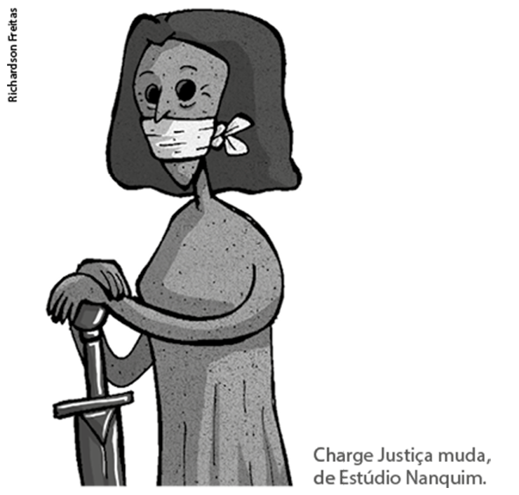
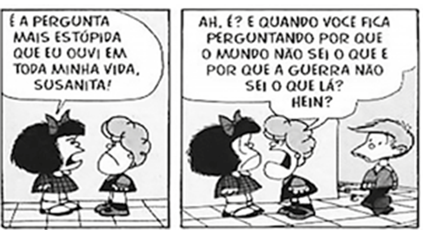
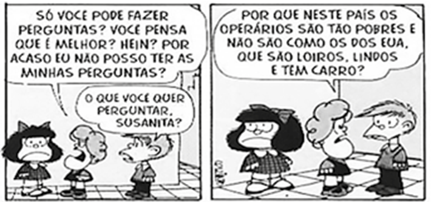

LOLI, Eugenia. Hypercream. [s.d.], colagem. Coleção particular.
Eugenia Loli/Coleção particular
Quando elaboramos textos (escritos ou falados), nós os colocamos em associação com outros já produzidos, os quais, por meio de um processo dialógico, estão constantemente se renovando. Por isso, durante a leitura e a interpretação de textos, ativamos nossos conhecimentos prévios por meio da observação das linguagens empregadas (verbal, imagética, sonora etc.), que acionam, em nossa memória, discursos e sentidos oriundos de outros textos e contextos.
Quanto maior o nosso repertório cultural, ou seja, quanto mais informações de diferentes esferas da atividade humana adquirimos, mais bem desenvolvidas serão as nossas capacidades de compreensão e produção textual. Com isso, passamos a ter mais recursos para produzir sentidos em nosso “banco de dados” intelectual.
- Na imagem de abertura, podemos observar a técnica de colagem que compõe a obra Hypercream, feita pela artista grega Eugenia Loli. Descreva as imagens que integram essa colagem.
- Interprete qual seria o sentido construído pela artista com a sobreposição de imagens.
- Avalie a proposta da artista e expresse sua opinião sobre ela: você concorda com essa possível mensagem transmitida pela obra?
Neste capítulo, serão abordadas as habilidades EM13LP02, EM13LP04, EM13LP05, EM13LP06.
Você já ouviu a expressão “ler nas entrelinhas”? Ela é utilizada para indicar a ação de compreender mensagens que não estão na superfície de um texto (falado ou escrito), o que nos exige atenção e perspicácia para perceber duplos sentidos, insinuações e construções repletas de intenções não verbalizadas, mas possíveis de serem depreendidas.
A Justiça é uma escultura criada pelo artista plástico mineiro Alfredo Ceschiatti em 1961. Ela foi produzida a partir de um bloco de granito e mede 3,3 m de altura e 1,48 m de largura. Está localizada em Brasília, em frente ao prédio do Supremo Tribunal Federal, concebido por Oscar Niemeyer.
A obra é uma releitura da representação da justiça, trazendo uma mulher sentada, de olhos vendados e com uma espada em suas mãos, remetendo aos implícitos de que a justiça é cega – ou melhor, imparcial – e, com sua espada, tem o dever do cumprimento da ordem e da lei, da imposição do direito. Veja na imagem ao lado.
Essa releitura de Ceschiatti já foi motivo de muitos questionamentos e diversas interpretações por parte de juristas.
- Discuta com os colegas os possíveis sentidos que podem ser atribuídos a essa obra de arte considerando que a justiça foi representada sentada e sem a balança, elemento que está presente na grande maioria de suas representações e que simboliza o equilíbrio entre as partes.
CESCHIATTI, Alfredo. A Justiça, 1961, granito. Brasília, DF.
Vitoriano Junior/Shutterstock.com
Informações implícitas
Como vimos, um texto pode conter mais informações do que parece transmitir, trazendo para seu leitor/ouvinte os implícitos, ou seja, informações nas entrelinhas, que não estão explicitamente afirmadas no material textual.
Vamos ler e analisar a charge a seguir.
Charge Justiça muda, de Estúdio Nanquim.
Richardson Freitas
Na charge, a venda é deslocada de sua posição tradicional, cobrindo os olhos, para a boca, transformando-se em mordaça, e a balança está ausente. A justiça passa a ser muda, implicando a transformação dos sentidos enunciados. Para entender essa informação, o leitor precisa:
- ativar conhecimentos prévios sobre a imagem que representa a justiça;
- descrever as informações explícitas em um novo contexto;
- relacionar tais aspectos para depreender o que está implícito.
Portanto, a imagem proposta na charge comunica de modo implícito que há uma justiça impedida de cumprir a lei. Ela não tem voz, pois se configura como uma justiça amordaçada, impedida de agir. Ampliando essa perspectiva, o sentido da charge pode configurar-se também como crítica a uma justiça que silencia, que não estaria cumprindo o seu dever de punir culpados, aqueles que infringem as leis.
Chamamos de informações implícitas, ou somente implícitos, os sentidos que não estão explicitados no texto, mas que podem ser depreendidos a partir de marcas linguísticas ou que são apenas insinuados. Assim, os pressupostos são implícitos que podem ser interpretados a partir de certas palavras, expressões ou outras marcas linguísticas. Já os subentendidos constituem insinuações que dependem do leitor/ouvinte para sua plena aceitação e interpretação.
Os implícitos são marcadores da presença de outras vozes, ou seja, eles colocam em diálogo, no mínimo, duas vozes: aquilo que está explícito e o que está implícito. Para compreendê-los, o leitor precisa acionar seu conhecimento prévio e estabelecer relações com o contexto sócio-histórico, relacionando tais aspectos ao explícito para, assim, compreender o implícito e construir sentido.
Pressupostos
Vamos analisar mais alguns implícitos a partir de uma fotografia que virou capa de livro.
Capa do livro Nem preto nem branco, muito pelo contrário: cor e raça na sociabilidade brasileira, de Lilia Moritz Schwarcz.
Reprodução
Essa fotografia, datada de 1963 e atribuída a Pierre Verger, permite-nos pressupor que existia um padrão de beleza estabelecido naquele tempo, pois a imagem retratada coloca em contraste a cor da pele da boneca e a da menina. A imagem torna-se uma marca ideológica de uma época, permitindo, na atualidade, uma inferência que traz a cor branca como padrão estético valorizado.
No título do livro, como estratégia para despertar o interesse do leitor, utiliza-se um pressuposto, ou seja, uma informação implícita que pode ser depreendida a partir de algumas marcas linguísticas (como palavras ou expressões) ou mesmo da associação entre elementos linguísticos e não linguísticos (como o título do livro em conjunto com a imagem utilizada na capa). No caso do livro, a fotografia escolhida, a expressão “muito pelo contrário” e as palavras “raça” e “sociabilidade”, articuladas e contextualizadas, permitem ao leitor realizar inferências para compreender implícitos que remetem ao seu conteúdo, percebendo que a obra abordará, por exemplo, o preconceito racial na sociedade brasileira.
Esse levantamento de hipóteses é uma importante estratégia de leitura, pois antecipa ao leitor determinadas informações que o auxiliam, entre outras coisas, a escolher ou analisar uma obra.
Em textos verbais, estruturas como advérbios, verbos, conjunções e adjetivos podem ser usadas para demarcar pressupostos. Imagine que você entrou em uma loja e se deparou com um cartaz que contém as seguintes frases:
Não deixe a concorrência explorar você!
Nós temos o melhor negócio!
Nessa construção, há o pressuposto de que a concorrência explora o consumidor. O verbo “deixar”, nesse caso, implica outro pressuposto que depende da aceitação do consumidor: se comprar da concorrência, você será explorado; se comprar de nós, fará o melhor negócio. Cabe, portanto, ao consumidor permitir ou não que o explorem.
Agora, leia o título e o subtítulo de uma reportagem.
A Copa é finalmente delas
Interesse pelo Mundial feminino faz com que atual edição já seja histórica
MENDONÇA, Renata. Folha de S.Paulo, 7 jun. 2019.
A partir do título, o leitor pode pressupor que a Copa do Mundo sempre foi um evento esportivo masculino – até o presente momento. O que demarca esse pressuposto é o advérbio “finalmente”, sugerindo que, depois de longo período e com grande esforço, o Mundial passa a ser também feminino.
Esse texto foi publicado em 7 de junho de 2019, no mesmo dia da abertura do evento. Isso permite compreender outro pressuposto, demarcado pelo advérbio “já” no subtítulo, o qual indica que, mesmo antes de ser iniciada efetivamente, essa Copa se tornou histórica e inesquecível devido ao interesse do público pelo evento.
Algumas conjunções – palavras com a função de conectar frases ou outras palavras – também podem demarcar pressupostos em alguns contextos. Imagine que as seguintes informações foram publicadas em um jornal:
Apesar da presença constante de turistas, a cidade pode ser bem atraente no inverno.
O termo “apesar de” demarca o pressuposto de que a presença constante de turistas é algo negativo. Para uma reportagem que tenha como foco o incentivo ao turismo, o recurso empregado pode não ser dos mais persuasivos.
Após acidente, as vítimas foram levadas ao pronto-socorro central, mas saíram com vida de lá.
Já a segunda construção nos leva a pressupor, por meio da conjunção “mas”, que ninguém sai vivo quando é encaminhado a um pronto-socorro; portanto, as vítimas desse acidente tiveram muita sorte. Tal pressuposto decorre de um problema na articulação entre os períodos, pois uma pessoa ser levada a um pronto-socorro não necessariamente implica que ela será uma vítima fatal. Em um texto jornalístico, muitas vezes, esses deslizes acontecem; por isso, é necessário ficar atento aos articuladores textuais utilizados para que, explícita ou implicitamente, a mensagem adequada seja transmitida.
Outra possibilidade de observar pressupostos é analisar o emprego de construções que funcionam como adjetivos. Observe:
Nossos funcionários dedicados têm alcançado seus objetivos.
Nossos funcionários que se dedicam têm alcançado seus objetivos.
Nossos funcionários, que se dedicam, têm alcançado seus objetivos.
Note que o adjetivo “dedicados” pode ser substituído pela oração subordinada adjetiva “que se dedicam”. Sem vírgulas, essa construção assume um sentido restritivo, a partir do qual se pressupõe que apenas alguns funcionários são dedicados. Com as vírgulas, o sentido passa a ser explicativo, levando a pressupor que todos os funcionários são dedicados.
Percebemos, então, que os adjetivos também podem demarcar pressupostos. Observe o exemplo a seguir:
A polarização política está prejudicando Brasil.
Nessa frase, compreende-se o pressuposto de que existe polarização política no Brasil no momento em que se enuncia.
Além disso, como já vimos anteriormente, as construções linguísticas podem associar-se a elementos não linguísticos. O meme a seguir circulou em 2015 durante a crise econômica vivenciada no país, período em que o dólar atingiu o valor de R$ 4,00, o que nunca tinha ocorrido até aquele momento.
Nota de 5 reais utilizada para gerar humor crítico.
Reprodução
Note que a expressão “nova nota de 1 dólar” se associa à imagem de uma nota de 5 reais. O adjetivo “nova”, nessa articulação com o visual, demarca o pressuposto de que o valor do dólar não é mais como antigamente, que está muito mais alto do que era antes (aproximando-se dos 5 reais), construindo, assim, uma crítica velada à situação econômica do país.
Subentendidos
Um outro tipo de informação implícita pode ocorrer a partir de insinuações não marcadas linguisticamente no texto. Nesse caso, temos um subentendido. Vamos ler a charge a seguir para compreender melhor como isso se constrói no enunciado.
Junião - www.juniao.com.br
Reprodução
A charge organiza-se em dois planos que constituem momentos sequenciais: o conhecimento de um atentado com quase 300 mortos e a constatação de que o atentado foi na África. No primeiro momento, observa-se o espanto dos telespectadores diante do fato; no segundo, o espanto transforma-se em uma expressão de indiferença.
Nesse caso, fica subentendido no texto que, por ser na África, continente pobre e predominantemente negro, o atentado não causa comoção, o que remete ao preconceito e à discriminação sofrida pelos povos do continente africano. Note que não há termo linguístico específico que possa ser selecionado para encaminhar esse sentido.
Há uma diferença central entre pressuposto e subentendido. No pressuposto, quando enunciamos ou ouvimos uma frase, podemos tirar conclusões a partir do próprio material linguístico. Exatamente por ser decorrente de uma marca linguística, o pressuposto traz uma informação que não pode ser negada, recaindo sobre o enunciatário a responsabilidade pelo sentido dela. Mesmo que o destinatário discorde, a informação se mantém. Imagine que, em uma conversa informal, um dos interlocutores enuncie a seguinte frase:
O feriado foi menos movimentado este ano, não é mesmo?
O advérbio “menos” permite inferir o seguinte pressuposto: em outros anos, esse feriado foi mais movimentado, ou seja, o falante avalia que houve uma diminuição no movimento de pessoas no ano corrente. Note que o destinatário pode discordar da informação, mas o pressuposto se mantém. Em uma argumentação, por exemplo, o falante poderia apresentar dados que comprovem sua posição. O pressuposto torna-se um recurso para tornar o ouvinte/leitor um “cúmplice”, constituindo estratégia argumentativa que pode levar o destinatário a concordar com a informação.
O subentendido depende do destinatário, pois, se ele não depreender o sentido implícito, o subentendido não se constitui. É importante compreender que o subentendido é uma maneira de o enunciador “se esconder” naquilo que é dito, pois ele mesmo pode negar o implícito caso o destinatário, por exemplo, sinta-se ofendido. O subentendido, portanto, é uma estratégia de não comprometimento, e a sua interpretação é de responsabilidade do destinatário.
Vamos ler uma piada para compreender como isso ocorre:
Uma bela moça estava lendo no banco da praça. Um velhinho faceiro, com seu cão de estimação, se aproxima e tenta puxar assunto dizendo:
– Meu cachorro é esperto. Ele me acha em qualquer lugar, sabia?
A moça deu uma cheiradinha no ar e disse:
– Já experimentou tomar um banho?
Para construir humor, o ouvinte precisa compreender o subentendido na fala da moça: o cachorro encontra o velhinho não por ser esperto, mas devido ao mau cheiro do dono. Imagine agora que essa piada representa um diálogo real e que o velhinho se sinta ofendido: “Você está dizendo que estou fedendo?”. A moça pode assumir o subentendido, dizendo que sim, ou pode não se comprometer e negar essa interpretação, dando qualquer outra justificativa. A moça não falou que o velhinho apresentava mau cheiro, mas deu a entender, deixou subentendido para não se comprometer. A frase sugere, mas não traz explicitamente a informação.
Texto para a questão 1.
A nova história do Brasil
Grande parte da história que os brasileiros conhecem hoje, aquela que ainda está na maioria dos livros didáticos, foi criada entre 1960 e 1980. Era um tempo mais tenso do que é hoje. A Guerra Fria dividia os países, os governantes e os intelectuais entre comunistas e capitalistas. Se no governo dominavam os capitalistas, nas universidades predominavam as ideias e os métodos de Karl Marx, o pai do comunismo científico. Mas o tempo passou. Aos poucos, os pesquisadores ficaram um pouco mais longe das ideologias e passaram a tirar conclusões sem tanto medo de aderir a um ou outro lado da política.
A visão clássica do Brasil colonial nasceu com o intelectual paulista Caio Prado Júnior em 1933. No livro Evolução política do Brasil, ele afirma que a sociedade brasileira era simples e desigual. Tudo girava em torno do latifúndio, que deixava só a miséria por aqui. Até que, na década de 1990, historiadores descobriram dados que não batiam com a teoria. Registros dos portos do Rio de Janeiro e de Salvador mostravam que, em épocas de crise na Europa, quando os preços do açúcar e algodão desabavam pelo mundo, no Brasil eles mudavam pouco. Esses dados sugerem que havia um bom mercado consumidor no Brasil.
NARLOCH, L. Superinteressante, n. 6, 2014 (adaptado).
1
Enem 2017 O autor do texto A nova história do Brasil apresenta uma posição crítica sobre as narrativas históricas. Essa posição se fundamenta no argumento de que
- os livros didáticos devem ser reformulados regularmente.
- os novos dados podem reconstruir as narrativas da história brasileira.
- o distanciamento ideológico deve estar presente nos livros de história.
- a história brasileira está dividida entre os grupos que a narram, comunistas e capitalistas.
Resolução
Alternativa: B
Para depreender a interpretação sugerida na alternativa em questão, é preciso relacionar a informação dada no primeiro parágrafo desse excerto com o argumento que exemplifica como a história pode ser reconstruída a partir de novos dados. Inicialmente, o autor explica que a história brasileira – da maneira como é conhecida pela maioria das pessoas – foi escrita entre os anos 1960 e 1980, um tempo mais difícil e que difere dos dias de hoje, em que os historiadores podem tirar conclusões desvinculadas de certas ideologias. Na sequência, o autor exemplifica a atuação de historiadores que recentemente descobriram a inconsistência entre dados sobre o mercado consumidor no território brasileiro e no mundo em momentos de crise. A partir desse argumento, fica implícito que novas informações, com o passar do tempo, podem reconstruir as narrativas da história brasileira.
O dito e o não dito no discurso irônico
Além de figura de linguagem, a ironia constitui importante recurso retórico e discursivo na construção de sentidos nos mais diversos textos. Ela consiste no efeito resultante do uso de um termo que, em um contexto específico, ganha sentido oposto ou diverso daquele com que costuma ser utilizado.
Mesmo não entrando especificamente na categoria classificativa dos implícitos, a ironia coloca em diálogo duas vozes discursivas que se superpõem: uma que traz o sentido literal (o dito) e outra que demarca o sentido figurado, o que realmente se quer transmitir (o não dito). Essa bivocalidade, em geral, constitui-se com discursos opostos, sendo um orientado de modo positivo e o outro, de modo negativo. Perceber a ironia, portanto, é apreender os sentidos dessa duplicidade de vozes.
A seguir, no poema do escritor modernista Mário de Andrade, a ironia se une a várias informações implícitas para construir uma crítica irreverente a uma questão social.
Moça linda bem tratada
Moça linda bem tratada,
Três séculos de família,
Burra como uma porta:
Um amor.
Grã-fino do despudor,
Esporte, ignorância e sexo,
Burro como uma porta:
Um coió.
Mulher gordaça, filó
De ouro por todos os poros
Burra como uma porta:
Paciência...
Plutocrata sem consciência,
Nada porta, terremoto
Que a porta de pobre arromba:
Uma bomba.
ANDRADE, Mário de. Lira paulistana seguida de o carro da miséria. São Paulo: Martins, [1946?]. p. 45.
Esse poema é composto de quatro estrofes, cada uma apresentando um dos membros da família retratada. Na primeira estrofe, temos a expressão “três séculos de família”, que permite pressupor a ideia da tradição, ou seja, trata-se de uma família tradicional. A “moça linda bem tratada”, portanto, é a filha burguesa; apesar de ser linda, ela é ignorante e superficial (“burra como uma porta”). A expressão “Um amor” constrói uma ironia, pois sugere que ela não é, de fato, um amor, despertando o interesse alheio por outros motivos. Para compreender essa construção irônica, subentende-se que, se não fosse o dinheiro e o status de sua família, ela não seria considerada um amor, pois, na verdade, não possui atrativos.
Na segunda estrofe, especifica-se o “grã-fino”, o filho burguês, alguém superficial que valoriza coisas fúteis (“Esporte, ignorância e sexo”); em sua essência, ele é um tolo (“coió”), deselegante. A “mulher gordaça”, na terceira estrofe, é a matrona da família. Sua superficialidade é caracterizada pelo desejo de ostentar (“ouro por todos os poros”). Assim como a filha, ela também é “burra como uma porta” – e, quanto a isso, segundo o eu lírico, só resta “paciência”.
Por fim, a última estrofe apresenta a figura do pai burguês, chamado de plutocrata. Sendo alguém que controla o capital, ele é um verdadeiro terremoto, uma bomba na vida do pobre, aquele que é explorado. Nessa estrofe, destaca-se a expressão “nada porta” em contraponto com a expressão “burro como uma porta”, que caracteriza os outros membros da família. “Nada porta” equivale a “nada burro”, o que nos leva a pressupor que o pai não é burro como o restante da família. Essa construção deixa subentendido que, por ser um plutocrata, o pai realmente sabe como se manter no poder, enriquecer, tirar vantagem etc.
Empregar implícitos ou ironia nos textos é conceber o nosso leitor como capaz de compreender esse procedimento, ou seja, capaz de construir sentido a partir desses recursos. Desse modo, o autor, ao utilizar o discurso irônico ou construir determinadas insinuações, está qualificando seu leitor, tomando-o como apto a apreender as mensagens contidas em seu texto, explícitas ou escondidas nas entrelinhas. Durante o processo de leitura e interpretação, portanto, devemos atuar como leitores ativos, que estabelecem relações entre o dito e o não dito e que percebem a riqueza de informações em um texto bem construído.
É importante atentar para o fato de que o Modernismo, enquanto movimento de renovação das artes, teve manifestações em todo o Brasil. São Paulo se tornou o epicentro das enormes mudanças que o movimento provocou, mas nos outros estados também houve mobilização de artistas, e reações contrárias e favoráveis da população.
Texto para as questões 1 e 2. Responda em seu caderno.
Armandinho, de Alexandre Beck
1
Explique a finalidade do exercício de empatia que Armandinho está realizando.
2
No último quadrinho, podemos inferir duas informações implícitas. Explique quais são elas.
3
A charge a seguir traz uma informação implícita que constrói uma crítica social. Interprete-a escrevendo um pequeno texto em seu caderno.
Benett
Texto para a questão 4.
Leia a tirinha a seguir, na qual conversam as personagens Mafalda, Susanita e Filipe.
 Disponível em http://tirinhasfilosoficas.blogspot.com.br. Acesso em 31 outubro 2016.
4
IFSC 2017 Assinale a alternativa correta com relação ao texto.
Ao perguntar “Você pensa que é melhor?”, Susanita
- expressa seu interesse pelas guerras que acontecem no mundo.
- deixa implícito que é melhor que Mafalda.
- quer reivindicar seu direito de questionar a realidade.
- revela que Mafalda deveria refletir melhor sobre os problemas da atualidade.
- revela sua admiração por Mafalda se preocupar com questões políticas.
5
Uerj 2019 (Adapt.)
Um poema de Vinicius de Moraes
A flutuação do gosto em relação aos poetas é normal, como é normal a sucessão dos modos de fazer poesia. Pelo visto, Vinicius de Moraes anda em baixa acentuada. [...]
5
Ora, Vinicius é melodioso e não tem medo de manifestar sentimentos, com uma naturalidade que deve desgostar as poéticas de choque. Por vezes, ele chega mesmo a cometer o pecado maior para o nosso tempo: o sentimentalismo. Isso lhe permitiu dar
10
estatuto de poesia a coisas, sentimentos e palavras extraídos do mais singelo cotidiano, do coloquial mais familiar e até piegas, de maneira a parecer muitas vezes um seresteiro milagrosamente transformado em poeta maior. João Cabral disse mais de
15
uma vez que sua própria poesia remava contra a maré da tradição lírica de língua portuguesa. Vinicius seria, ao contrário, alguém integrado no fluxo da sua corrente, porque se dispôs a atualizar a tradição. Isso foi possível devido à maestria com que dominou
20
o verso, jogando com todas as suas possibilidades.
Ele consegue ser moderno usando metrificação e cultivando a melodia, com uma imaginação renovadora e uma liberdade que quebram as convenções e conseguem preservar os valores coloquiais. Rigoroso
25
como Olavo Bilac, fluido como o Manuel Bandeira dos versos regulares, terra a terra como os poemas conversados de Mário de Andrade, esse mestre do soneto e da crônica é um raro malabarista.
ANTONIO CANDIDO. Adaptado de Teoria e debate, nº 49. São Paulo: Fundação Perseu Abramo, out-dez, 2001.
Com base nas ideias apresentadas no texto, a metáfora um raro malabarista (linha 28) sugere que o poeta articula os seguintes aspectos em sua poesia:
- humor e seriedade.
- tradição e inovação.
- erudição e formalismo.
- musicalidade e silêncio.
Texto para as questões 6 e 7. Responda em seu caderno.
Papa pede aos jovens que troquem “a vida no sofá” por um mundo melhor
Em uma mensagem que será transmitida em abril, o papa Francisco falou diretamente aos jovens. O pontífice pediu que a juventude troque o sedentarismo pela construção de um mundo melhor.
O Globo com informações da Agência AFP, 21 mar. 2017.
6
Explique o que fica pressuposto na fala do Papa.
7
Especifique a marca linguística que o levou a tal inferência.
Texto para as questões 8 e 9. Responda em seu caderno.
Estudantes britânicos faltam às aulas para protestar pelo clima
GOERING, Laurie. O Globo, 16 fev. 2019.
Crianças e jovens lideram greve global pelo clima
DINIZ, Beatriz. O Eco, 15 mar. 2019.
8
Identifique os pressupostos em cada excerto e especifique as marcas linguísticas que os constituem.
9
Explique de que modo os implícitos revelam o posicionamento dos jornais diante do fato noticiado.
10
Uerj 2017
QUINO. updateordie.com
No primeiro quadrinho, a declaração feita pela personagem indica um pressuposto acerca do universo escolar. Esse pressuposto pode ser associado, na escola, à seguinte prática:
- negação do patriotismo.
- intolerância à diversidade.
- desestímulo às indagações.
- reprovação de brincadeiras.
Texto para as questões 11 e 12. Responda em seu caderno.
Junião - www.juniao.com.br
11
Explique o que condiciona o posicionamento tomado pela personagem da charge em cada quadro.
12
Interprete a crítica subentendida no texto.
Texto para as questões 13 e 14. Responda em seu caderno.
Analise o diálogo entre Mauro (a minhoca) e Tuta (o tatu) na tirinha a seguir.
Clara Gomes - www.bichinhosdejardim.com
13
Explique que característica de Tuta fica subentendida na tirinha. Justifique sua resposta.
14
O humor da tirinha decorre da fala de Tuta no último quadrinho: “Leia-se: o dinheiro só deu pro sorvete”.
- O termo “leia-se” exerce que função na tirinha?
- O que você considera que Mauro quis realmente expressar em sua última fala?
Texto para a questão 15.
Analise o diálogo entre Mauro (a minhoca) e Tuta (o tatu) na tirinha a seguir.
Amora
a palavra amora
seria talvez menos doce
e um pouco menos vermelha
se não trouxesse em seu corpo
(como um velado esplendor)
a memória da palavra amor
a palavra amargo
seria talvez mais doce
e um pouco menos acerba
se não trouxesse em seu corpo
(como uma sombra a espreitar)
a memória da palavra amar
Marco Catalão, Sob a face neutra.
15
Fuvest-SP 2020 É correto afirmar que o poema
- aborda o tema da memória, considerada uma faculdade que torna o ser humano menos amargo e sombrio.
- enfoca a hesitação do eu lírico diante das palavras, o que vem expresso pela repetição da palavra “talvez”.
- apresenta natureza romântica, sendo as palavras “amora” e “amargo” metáforas do sentimento amoroso.
- possui reiterações sonoras que resultam em uma tensão inusitada entre os termos “amor” e “amar”.
- ressalta os significados das palavras tal como se verificam no seu uso mais corrente.
Para responder à questão 16, leia o trecho do livro O homem cordial, de Sérgio Buarque de Holanda.
Já se disse, numa expressão feliz, que a contribuição brasileira para a civilização será de cordialidade – daremos ao mundo o “homem cordial”. A lhaneza¹ no trato, a hospitalidade, a generosidade, virtudes tão gabadas por estrangeiros que nos visitam, representam, com efeito, um traço definido do caráter brasileiro, na medida, ao menos, em que permanece ativa e fecunda a influência ancestral dos padrões de convívio humano, informados no meio rural e patriarcal. Seria engano supor que essas virtudes possam significar “boas maneiras”, civilidade. São antes de tudo expressões legítimas de um fundo emotivo extremamente rico e transbordante. Na civilidade há qualquer coisa de coercitivo – ela pode exprimir-se em mandamentos e em sentenças. Entre os japoneses, onde, como se sabe, a polidez envolve os aspectos mais ordinários do convívio social, chega a ponto de confundir-se, por vezes, com a reverência religiosa. Já houve quem notasse este fato significativo, de que as formas exteriores de veneração à divindade, no cerimonial xintoísta, não diferem essencialmente das maneiras sociais de demonstrar respeito.
Nenhum povo está mais distante dessa noção ritualista da vida do que o brasileiro. Nossa forma ordinária de convívio social é, no fundo, justamente o contrário da polidez. Ela pode iludir na aparência – e isso se explica pelo fato de a atitude polida consistir precisamente em uma espécie de mímica deliberada de manifestações que são espontâneas no “homem cordial”: é a forma natural e viva que se converteu em fórmula. Além disso a polidez é, de algum modo, organização de defesa ante a sociedade. Detém-se na parte exterior, epidérmica do indivíduo, podendo mesmo servir, quando necessário, de peça de resistência. Equivale a um disfarce que permitirá a cada qual preservar intatas sua sensibilidade e suas emoções.
[...]
No “homem cordial”, a vida em sociedade é, de certo modo, uma verdadeira libertação do pavor que ele sente em viver consigo mesmo, em apoiar-se sobre si próprio em todas as circunstâncias da existência. Sua maneira de expansão para com os outros reduz o indivíduo, cada vez mais, à parcela social, periférica, que no brasileiro – como bom americano – tende a ser a que mais importa. Ela é antes um viver nos outros.
(O homem cordial, 2012.)
¹ lhaneza: afabilidade.
16
Unifesp 2020 (Adapt.) Dentre os seguintes termos empregados no primeiro parágrafo, considerados no contexto, o que tem sentido mais genérico é:
- veneração.
- lhaneza.
- polidez.
- civilidade.
- caráter.
16
Unicamp-SP 2019 Para driblar a censura imposta pela ditadura militar, compositores de música popular brasileira (MPB) valiam-se do que Gilberto Vasconcelos chamou de “linguagem da fresta”, expressão inspirada na canção “Festa imodesta”, de Caetano Veloso.
(...)
Numa festa imodesta como esta
Vamos homenagear
Todo aquele que nos empresta sua testa
Construindo coisas pra se cantar
Tudo aquilo que o malandro pronuncia
E que o otário silencia
Toda festa que se dá ou não se dá
Passa pela fresta da cesta e resta a vida.
Acima do coração que sofre com razão
A razão que volta do coração
E acima da razão a rima
E acima da rima a nota da canção
Bemol natural sustenida no ar
Viva aquele que se presta a esta ocupação
Salve o compositor popular
(Gilberto de Vasconcelos, Música popular: de olho na fresta. Rio de Janeiro: Graal, 1977.)
É correto afirmar que, na canção, essa “linguagem da fresta” transparece
- na contradição entre “festa” e “fresta”, que funciona como crítica ao malandro.
- na repetição de palavras com pronúncia semelhante para louvar a MPB.
- na referência à “fresta” como forma de o compositor se pronunciar..
- na incoerência da rima entre “festa” e “imodesta” para prestigiar o compositor.
1
FMP-RJ 2018 (Adapt.)
Limites da manipulação genética
Nos últimos anos, a possibilidade de manipulação genética de seres humanos se tornou tecnicamente real, o que levou à publicação de vários manifestos da comunidade científica internacional contra o uso da técnica em embriões, óvulos e espermatozoides humanos. Não aceitamos alterações genéticas que possam ser transmitidas às próximas gerações. Apesar disso, cientistas chineses publicaram um trabalho descrevendo a criação de embriões humanos geneticamente modificados! Abrimos a Caixa de Pandora?
Ainda não. Os pesquisadores chineses só testaram o quão segura a técnica é de fato em embriões humanos – afinal, se um dia pudéssemos, por exemplo, corrigir a mutação no gene do câncer de mama, interromperíamos a herança genética familiar e os filhos não correriam o risco de herdar a doença.
Se temos algo a ganhar com a técnica, não vale a pena testá-la? Sim, mas existe uma linha muito tênue entre ousadia e irresponsabilidade, e o desenvolvimento científico não pode cruzá-la. Assim, para ficar do lado de cá dessa fronteira, foram usados embriões defeituosos de fertilização in vitro. Neles foram injetadas pequenas moléculas construídas para consertar um gene que, quando “mutado”, causa uma forma grave de anemia. Dos 54 embriões analisados, somente quatro tinham o gene corrigido... Além disso, eles também tinham alterações genéticas em outros locais não planejados do genoma – ou seja, a tal molécula muitas vezes erra o seu alvo...
[...]
PEREIRA, L.
O primeiro parágrafo do texto termina com uma pergunta retórica: “Abrimos a Caixa de Pandora?” Essa expressão refere-se ao mito grego de Pandora, primeira mulher criada pelo deus grego Zeus, que dele recebeu uma caixa contendo muitas desgraças e um único dom – a esperança. Pandora foi criada com um único defeito, a curiosidade, porque Zeus sabia que, um dia, a vontade de Pandora a levaria a abrir a caixa e libertar o mal aos homens.
Essa referência ao mito sugere que as pesquisas de manipulação genética
- possibilitaram a seleção em laboratório de embriões para dar origem a seres geneticamente perfeitos e sadios.
- enveredaram por um caminho perigoso com resultados inesperados que podem causar danos em vez de benefícios.
- atingiram um grau de avanço que permite anunciar a cura de doenças cada vez mais frequentes e agressivas.
- causaram problemas de nível técnico que apresentam difícil solução para a comunidade científica internacional.
- descobriram procedimentos sigilosos que podem aumentar o nível de competição entre grupos de cientistas.
Texto para a questão 2.
Proibido para menores de 50 anos. Nos últimos meses, em meio ao debate sobre as reformas na Previdência, um ponto acabou despertando a atenção. Afinal, existem empregos para quem tem mais de 50 anos? Pendurar as chuteiras nem sempre é fácil. Às vezes, pode significar uma quebra tão grande na rotina que afeta até mesmo o emocional. Foi a partir de uma experiência familiar nesta linha que o paulistano Mórris Litvak criou a startup MaturiJobs. Trata-se de uma agência virtual de empregos, especializada em profissionais com mais de 50 anos.
(Revista Isto é Dinheiro. Mercado de Trabalho. Maio/2017. p. 6.)
2
ITA-SP 2018 A afirmação “Pendurar as chuteiras nem sempre é fácil” sugere
- falta de recursos para aproveitar a fase chamada melhor idade.
- comprometimento emocional gerado por mudança de hábitos.
- diminuição da capacidade intelectual do idoso.
- rejeição dos limites físicos decorrentes da idade.
-
perda de
status decorrente da saída do mercado de trabalho.
3
Unesp 2018 Leia o conto “A moça rica”, de Rubem Braga (1913-1990), para responder à questão a seguir.
A madrugada era escura nas moitas de mangue, e eu avançava no ¹batelão velho; remava cansado, com um resto de sono. De longe veio um ²rincho de cavalo; depois, numa choça de pescador, junto do morro, tremulou a luz de uma lamparina.
Aquele rincho de cavalo me fez lembrar a moça que eu encontrara galopando na praia. Ela era corada, forte. Viera do Rio, sabíamos que era muito rica, filha de um irmão de um homem de nossa terra. A princípio a olhei com espanto, quase desgosto: ela usava calças compridas, fazia caçadas, dava tiros, saía de barco com os pescadores. Mas na segunda noite, quando nos juntamos todos na casa de Joaquim Pescador, ela cantou; tinha bebido cachaça, como todos nós, e cantou primeiro uma coisa em inglês, depois o Luar do sertão e uma canção antiga que dizia assim: “Esse alguém que logo encanta deve ser alguma santa”. Era uma canção triste.
Cantando, ela parou de me assustar; cantando, ela deixou que eu a adorasse com essa adoração súbita, mas tímida, esse fervor confuso da adolescência – adoração sem esperança, ela devia ter dois anos mais do que eu. E amaria o rapaz de suéter e sapato de basquete, que costuma ir ao Rio, ou (murmurava-se) o homem casado, que já tinha ido até à Europa e tinha um automóvel e uma coleção de espingardas magníficas. Não a mim, com minha pobre ³flaubert, não a mim, de calça e camisa, descalço, não a mim, que não sabia lidar nem com um motor de popa, apenas tocar um batelão com meu remo.
Duas semanas depois que ela chegou é que a encontrei na praia solitária; eu vinha a pé, ela veio galopando a cavalo; vi-a de longe, meu coração bateu adivinhando quem poderia estar galopando sozinha a cavalo, ao longo da praia, na manhã fria. Pensei que ela fosse passar me dando apenas um adeus, esse “bom-dia” que no interior a gente dá a quem encontra; mas parou, o animal resfolegando e ela respirando forte, com os seios agitados dentro da blusa fina, branca. São as duas imagens que se gravaram na minha memória, desse encontro: a pele escura e suada do cavalo e a seda branca da blusa; aquela dupla respiração animal no ar fino da manhã.
E saltou, me chamando pelo nome, conversou comigo. Séria, como se eu fosse um rapaz mais velho do que ela, um homem como os de sua roda, com calças de “palm-beach”, relógio de pulso. Perguntou coisas sobre peixes; fiquei com vergonha de não saber quase nada, não sabia os nomes dos peixes que ela dizia, deviam ser peixes de outros lugares mais importantes, com certeza mais bonitos. Perguntou se a gente comia aqueles cocos dos coqueirinhos junto da praia – e falou de minha irmã, que conhecera, quis saber se era verdade que eu nadara desde a ponta do Boi até perto da lagoa.
De repente me fulminou: “Por que você não gosta de mim? Você me trata sempre de um modo esquisito...” Respondi, estúpido, com a voz rouca: “Eu não”.
Ela então riu, disse que eu confessara que não gostava mesmo dela, e eu disse: “Não é isso.” Montou o cavalo, perguntou se eu não queria ir na garupa. Inventei que precisava passar na casa dos Lisboa. Não insistiu, me deu um adeus muito alegre; no dia seguinte foi-se embora.
Agora eu estava ali remando no batelão, para ir no Severone apanhar uns camarões vivos para isca; e o relincho distante de um cavalo me fez lembrar a moça bonita e rica. Eu disse comigo – rema, bobalhão! – e fui remando com força, sem ligar para os respingos de água fria, cada vez com mais força, como se isto adiantasse alguma coisa.
(Os melhores contos, 1997.)
¹ batelão: embarcação movida a remo.
² rincho: relincho.
³ flaubert: um tipo de espingarda.
A fala “rema, bobalhão!” (último parágrafo) sugere, por parte do narrador,
- intransigência.
- impaciência.
- atrevimento.
- simplicidade.
- arrependimento.
4
Fuvest-SP 2017 Examine este cartaz, cuja finalidade é divulgar uma exposição de obras de Pablo Picasso.
http://insitutotomieohtake.org.br
Nas expressões “Mão erudita” e “Olho selvagem”, que compõem o texto do anúncio, os adjetivos “erudita” e “selvagem” sugerem que as obras do referido artista conjugam, respectivamente,
- intracivilização e barbárie.
- requinte e despojamento.
- modernidade e primitivismo.
- liberdade e autoritarismo.
- tradição e transgressão.
5
Famerp-SP 2017 Leia o texto de Tales Ab’Sáber para responder à questão a seguir.
http://insitutotomieohtake.org.br
Há em Berlim uma casa que nunca fecha. Aquela noite que não termina jamais pode de fato começar a qualquer momento do dia, às sete da manhã ou ainda às dez. Lá todos os tempos se estendem e noite e dia se transformam em outra coisa. Naquela imensa boate que pretende expandir o seu plano de existência, seu tempo infinito, sobre a vida e a cidade, construída em uma antiga fábrica – uma antiga usina de energia nazista –, todo tipo de figura da noite se encontra, em uma festa fantástica alucinada que deseja não terminar jamais.
À luz da vida tecno¹ avançada, as ideias tradicionais de dia e de noite se revelam mais frágeis, bem mais insólitas do que a vida cotidiana sob o regime da produção nos leva a crer. Para alguns, o mundo do dia se tornará definitivamente vazio e apenas a noite excitada e veloz vai concentrar em si o valor do que é vivo.
Naquela boate, como em muitas outras, tudo se encerra apenas quando o efeito prolongado e sistemático da droga se encerra. Como uma pausa para respirar, às vezes tendo passado muitos dias entre uma jornada de diversão e sua suspensão momentânea. Para muitos, apenas pelo tempo mínimo da reposição das forças até a próxima jornada, extenuante, sem fim, pela política imaginária da noite.
E, ainda mais. Para outros tantos, o próprio efeito da droga sob a pulsação infinita da música eletrônica, experiência programática e enfeitiçada, não deveria se encerrar jamais: estes estariam destinados ao projeto de dissolução na pulsação sem eu da música tecno, seja a dissolução do espírito, em uma infantilização sem fim para os embates materiais da vida, seja a dissolução do corpo, ambos igualmente reais.
De fato, após uma noite de vida tecno, é forte a experiência radical de vazio que se torna o espírito do dia. A energia foi imensamente gasta à noite. Foi devastada, tornando o dia vazio de objeto, porém vivo. Vivo no vazio, muito bem articulado à busca pelo excedente absoluto de mais tarde, à noite.
(A música do tempo infinito, 2012. Adaptado.)
¹ tecno: estilo de música eletrônica.
“Para alguns, o mundo do dia se tornará definitivamente vazio e apenas a noite excitada e veloz vai concentrar em si o valor do que é vivo.”(2o parágrafo)
Considerado em seu contexto, o trecho sugere que
- as ruas perto da boate ficam vazias durante as noites porque todos estão dentro da casa.
- os conceitos de dia e de noite, ligados ao mundo natural, podem ser relativizados pelas construções humanas, como a boate.
- é possível distinguir dia e noite, mesmo num ambiente fechado como a boate.
- há frequentadores da boate que consideram que tudo o que é externo à casa não tem qualquer valor.
- algumas pessoas preferem entrar na boate apenas durante a noite, ainda que a casa fique aberta o tempo todo.
6
IFPE 2016
Nova descoberta pode levar à cura de Alzheimer
Pesquisadores usaram um composto que impediu os mecanismos de defesa de se manifestarem, e por sua vez interrompeu o processo de degeneração dos neurônios.
O estudo, divulgado na publicação científica Science Translational Medicine, mostrou que camundongos com doença de príon desenvolveram problemas graves de memória e de movimento. Eles morreram em um período de 12 semanas. No entanto, aqueles que receberam o composto não mostraram qualquer sinal de tecido cerebral sendo destruído.
A coordenadora da pesquisa, Giovanna Mallucci, disse à BBC: “Eles estavam muito bem, foi extraordinário.” (...) Ela disse que o composto oferece um “novo caminho que pode muito bem resultar em drogas de proteção” e o próximo passo seria empresas farmacêuticas desenvolverem um medicamento para uso em seres humanos.
Os efeitos colaterais são um problema. O composto também atuou no pâncreas, ou seja, os camundongos desenvolveram uma forma leve de diabetes e perda de peso. Qualquer medicamento humano precisará agir apenas sobre o cérebro.
Comentando a pesquisa, Roger Morris da King’s College London, disse: “Esta descoberta, eu suspeito, será julgada pela história como um acontecimento importante na busca de medicamentos para controlar e prevenir o Alzheimer.”
Ele disse à BBC que uma cura para a doença de Alzheimer não era iminente, mas disse que está “muito animado, pois é o primeiro teste feito em um animal vivo que prova ser possível retardar a degeneração de neurônios”. “O mundo não vai mudar amanhã, mas este é um estudo de referência.”
David Allsop, professor de neurociência da Univer-sidade de Lancaster, descreveu os resultados como “muito impressionante e encorajador”, mas advertiu que era necessário mais pesquisas para ver como as descobertas se aplicam a doenças como Alzheimer e Parkinson.
Eric Karran, diretor de pesquisa da organização sem fins lucrativos Alzheimer’s Research UK, disse: “Focar em um mecanismo relevante para uma série de doenças neurodegenerativas poderia render um único medicamento com benefícios de grande alcance, mas este composto ainda está em uma fase inicial.” “É importante que estes resultados sejam repetidos e testados em outras doenças neurodegenerativas, incluindo o mal de Alzheimer.”
BBC BRASIL. Nova descoberta pode levar a cura de Alzheimer. 10 de outubro de 2013. Adaptado de: <http://www.bbc.com/portuguese/noticias/2013/10/131010_descoberta_alzheimer_an.> Acesso em: 22 set. 2015.
A partir da leitura do texto e de seus pressupostos, julgue os itens como verdadeiros ou falsos.
- A droga desenvolvida por Mallucci é capaz de regenerar o tecido neuronal.
- Os efeitos colaterais provocados pelo uso da droga precisam ser controlados nos próximos estudos.
- Os efeitos colaterais demonstraram-se irrelevantes, uma vez que a droga só age sobre o cérebro.
- Roger Morris afirma que o King’s College London fará um julgamento para adotar um posicionamento histórico sobre o uso da droga.
- Para Morris, a droga futuramente será vista como um marco no desenvolvimento de um medicamento para o mal de Alzheimer.
Assinale a alternativa correta.
- Apenas I e V são verdadeiras.
- Apenas III e IV são verdadeiras.
- Apenas II e IV são verdadeiras
- Apenas II e V são verdadeiras.
- Todas as alternativas são verdadeiras.
7
UFJF/Pism-MG 2015 Leia um trecho de uma entrevista com o antropólogo Roberto DaMatta:
O jeitinho brasileiro é uma forma de corrupção?
Se a regra transgredida não causa prejuízo, temos o “jeitinho” positivo e, dirá eu, ético. Por exemplo: estou na fila, chega uma senhora precisando pagar sua conta que vence aquele dia e pede para passar na frente. Não há o que reclamar dessa forma de “jeitinho”, que seria universal porque poderia ocorrer na maioria dos países conhecidos, exceto talvez na Alemanha ou na Suíça, onde um trem sai às 14:57! E sai mesmo: eu fiz o teste.
A questão sociológica que o “jeitinho” apresenta, porém, é outra. Ela mostra uma relação ruim com a lei geral, com a norma desenhada para todos os cidadãos, com o pressuposto que essa regra universal produz legalidade e cidadania! Eu pago meus impostos integralmente e por isso posso exigir dos funcionários públicos do meu país. Tenho o direito – como cidadão – de tomar conta da Biblioteca Nacional, que também é minha. Agora, se eu dou um jeito nos meus impostos porque o delegado da receita federal é meu amigo ou parente e faz a tal “vista grossa”, aí temos o “jeitinho” virando corrupção. (...) O que nos enlouquece hoje no Brasil não é a existência do jeitinho como ponte negativa entre a lei e a pessoa especial que dela se livra. É a persistência de um certo estilo de lidar com a lei, marcadamente aristocrático, que de certo modo induz o chefe, o diretor, o dono, o patrão, o governador, o presidente a passar por cima da lei porque ele a “empossa”.
DaMatta, R. Entrevista. Disponível em: http://maniadehistoria.wordpress.com/. Acesso em: 19 ago. 2014. (adaptado)
Considerando o texto acima, escolha a alternativa correta.
Para Roberto DaMatta:
- o “jeitinho brasileiro” é sempre sinônimo de corrupção.
- toda regra transgredida provoca prejuízo aos outros.
- ocupar certos cargos não significa estar acima da lei.
Assinale a alternativa correta.
- todas as afirmativas são verdadeiras.
- todas as afirmativas são falsas.
- apenas a afirmativa III é verdadeira.
- as afirmativas I e III são verdadeiras.
- apenas a afirmativa I é falsa.
Texto para as questões 8 e 9.
[...]
Tratava-se de uma orientação pedagógica que acreditava no papel da instrução como base prévia das transformações sociais. Ela preconizava uma educação rigorosamente leiga em classes mistas, sem religião, com predomínio da ciência apelando para a iniciativa do aluno e criando para ele condições atraentes de aprendizado, com o fim de formar cidadãos independentes não submetidos aos preconceitos. Ao mesmo tempo, Ferrer pregava a organização sindical dos professores e a sua solidariedade com o movimento operário, como consequência lógica do pressuposto segundo o qual a instrução leiga e científica leva necessariamente a desejar a transformação da sociedade.
(Antonio Candido, Teresina etc...)
8
ESPM-SP (Adapt.) Depreende-se do texto que:
- finalidade de qualquer educação é o esclarecimento em assuntos sexuais em classes mistas.
- o alvo de uma pedagogia revolucionária consistiria em transformar todo aluno em operário.
- o objetivo primeiro desse tipo de instrução era formar quadros militantes para o movimento sindical.
- o intuito desse sistema de ensino era buscar conciliar o aprendizado com uma postura favorável à mudança social.
- a preocupação maior dessa atitude educacional voltava-se para uma ética leiga e liberal, mas anticientifíca.
9
ESPM-SP (Adapt.) Com base no texto, pode-se afirmar que o modelo pedagógico defendido pretendia aliar:
- Religião, obscurantismo e mudança política.
- Estado laico, corpo docente e sindicalização dos discentes.
- Ciência, participação do aluno e transformação da sociedade.
- Formação leiga, nivelamento social e cidadania.
- Quebra de preconceitos, identidade operária e revolução.
10
UFRGS 2014 O que havia de tão revolucionário na Revolução Francesa? Soberania popular, liberdade civil, igualdade perante a lei – as palavras hoje são ditas com tanta facilidade que somos incapazes de imaginar seu caráter explosivo em 1789. Para os franceses do Antigo Regime, os homens eram desiguais, e a desigualdade era uma boa coisa, adequada à ordem hierárquica que fora posta na natureza pela própria obra de Deus. A liberdade significava privilégio – isto é, literalmente, “lei privada”, uma prerrogativa especial para fazer algo negado a outras pessoas. O rei, como fonte de toda a lei, distribuía privilégios, pois havia sido ungido como o agente de Deus na terra.
Durante todo o século XVIII, os filósofos do Iluminismo questionaram esses pressupostos, e os panfletistas profissionais conseguiram empanar a aura sagrada da coroa. Contudo, a desmontagem do quadro mental do Antigo Regime demandou violência iconoclasta, destruidora do mundo, revolucionária.
Seria ótimo se pudéssemos associar a Revolução exclusivamente à Declaração dos Direitos do Homem e do Cidadão, mas ela nasceu na violência e imprimiu seus princípios em um mundo violento. Os conquistadores da Bastilha não se limitaram a destruir um símbolo do despotismo real. Entre eles, 150 foram mortos ou feridos no assalto à prisão e, quando os sobreviventes apanharam o diretor, cortaram sua cabeça e desfilaram-na por Paris na ponta de uma lança.
Como podemos captar esses momentos de loucura, quando tudo parecia possível e o mundo se afigurava como uma tábula rasa, apagada por uma onda de comoção popular e pronta para ser redesenhada? Parece incrível que um povo inteiro fosse capaz de se levantar e transformar as condições da vida cotidiana. Duzentos anos de experiências com admiráveis mundos novos tornaram-nos céticos quanto ao planejamento social. Retrospectivamente, a Revolução pode parecer um prelúdio ao totalitarismo.
Pode ser. Mas um excesso de visão histórica retrospectiva pode distorcer o panorama de 1789. Os revolucionários franceses não eram nossos contemporâneos. E eram um conjunto de pessoas não excepcionais em circunstâncias excepcionais. Quando as coisas se desintegraram, eles reagiram a uma necessidade imperiosa de dar-lhes sentido, ordenando a sociedade segundo novos princípios. Esses princípios ainda permanecem como uma denúncia da tirania e da injustiça. Afinal, em que estava empenhada a Revolução Francesa? Liberdade, igualdade, fraternidade.
Adaptado de: DARNTON, Robert. O beijo de Lamourette. In: ____. O beijo de Lamourette: mídia, cultura e revolução. São Paulo: Cia. das Letras, 2010. p. 30-39.
Em seu sentido global, o texto
- sustenta que o caráter aparentemente libertário da Revolução Francesa era, de fato, tirano e injusto.
- expõe os sistemas filosóficos do Iluminismo.
- explica a Revolução Francesa, com base no conflito entre ideias Iluministas panfletárias e o quadro mental do Antigo Regime.
- enfatiza a importância dos princípios defendidos na Revolução Francesa, apesar da violência nela presente.
- alerta para a irrelevância de se julgar de modo crítico a Revolução Francesa, retrospectivamente.
11
Uerj 2017 (Adapt.) Vivemos num mundo confuso e confusamente percebido. De fato, se desejamos escapar à crença de que esse mundo assim apresentado é verdadeiro, e não queremos admitir a permanência de sua percepção enganosa, devemos considerar a existência de pelo menos três mundos num só. O primeiro seria o mundo tal como nos fazem vê-lo: a globalização como fábula. O segundo seria o mundo tal como ele é: a globalização como perversidade. E o terceiro, o mundo como ele pode ser: uma outra globalização.
Este mundo globalizado, visto como fábula, constrói como verdade um certo número de fantasias. Fala-se, por exemplo, em aldeia global para fazer crer que a difusão instantânea de notícias realmente informa as pessoas. A partir desse mito e do encurtamento das distâncias – para aqueles que realmente podem viajar – também se difunde a noção de tempo e espaço contraídos. É como se o mundo houvesse se tornado, para todos, ao alcance da mão. Um mercado avassalador dito global é apresentado como capaz de homogeneizar o planeta quando, na verdade, as diferenças locais são aprofundadas. O mundo se torna menos unido, tornando também mais distante o sonho de uma cidadania de fato universal. Enquanto isso, o culto ao consumo é estimulado.
[...]
MILTON SANTOS. Adaptado de Por uma outra globalização: do pensamento único à consciência universal. Rio de Janeiro: Record, 2004.
A partir desse mito e do encurtamento das distâncias – para aqueles que realmente podem viajar – também se difunde a noção de tempo e espaço contraídos.
O comentário introduzido entre travessões apresenta um ponto de vista do autor que se sustenta em um elemento subentendido.
Esse elemento está associado à existência, na sociedade, de:
- valores familiares.
- apelos publicitários.
- diversidade cultural.
- desigualdade econômica.
12
UCPel-RS 2017 (Adapt.) Leia o texto, a seguir, atentando para responder à questão.
Médico debocha de paciente na internet e é demitido
Pacientes e internautas ficaram indignados com a postura do funcionário
[...]
Um médico plantonista do hospital público Santa Rosa de Lima, administrado pela Santa Casa de Serra Negra, em São Paulo, foi afastado do trabalho após ter uma foto divulgada em seu Facebook em que debocha de um paciente que não falou corretamente as palavras “pneumonia” e “Raio-X” em uma consulta.
O médico em questão publicou em sua rede social a imagem de um receituário em que se lê: “Não existe peleumonia e nem raôxis”. A postagem foi comentada pelas funcionárias do hospital, que também foram demitidas.
O Conselho Regional de Medicina de São Paulo (Cremesp) informou que vai instaurar uma sindicância para avaliar a postura do profissional.
O caso ganhou repercussão depois que a denúncia foi publicada na coluna “Comentando”, e outros pacientes e internautas ficaram indignados com a postura do clínico geral. A diretoria do Hospital Santa Rosa de Lima publicou uma nota em que repudia o comportamento dos ex-funcionários.
Texto adaptado. Disponível em: <http://noticias.band.uol.com.br/cidades/noticia/100000816630/medico-debocha-depaciente-na-internet-e-e-demitido-de-hospital.html>. Acesso em: 07 nov. 2016.
Sobre a posição do médico, referida no texto, é correto afirmar que:
-
O médico ilustra a importância de usar a maneira correta de se empregar as palavras “pneumonia” e “Raio-X” em uma consulta.
- O médico deixa subentendido que língua é dinâmica e exerce um papel social, assim, podem coexistir variações da mesma.
- O médico privilegia a utilização da norma culta da língua não se apegando ao contexto comunicativo.
- O médico deixa implícito que, no contexto social, a escolaridade não influencia em um diálogo, pois considera as variações dialetais.
- I e II.
- III e IV.
- II e III.
- II e IV.
- I e III.
Para responder à questão 13, leia a crônica “Anúncio de João Alves”, de Carlos Drummond de Andrade (1902-1987), publicada originalmente em 1954.
Figura o anúncio em um jornal que o amigo me mandou, e está assim redigido:
À procura de uma besta. – A partir de 6 de outubro do ano cadente, sumiu-me uma besta vermelho-escura com os seguintes característicos: calçada e ferrada de todos os membros locomotores, um pequeno quisto na base da orelha direita e crina dividida em duas seções em consequência de um golpe, cuja extensão pode alcançar de quatro a seis centímetros, produzido por jumento.
Essa besta, muito domiciliada nas cercanias deste comércio, é muito mansa e boa de sela, e tudo me induz ao cálculo de que foi roubada, assim que hão sido falhas todas as indagações.
Quem, pois, apreendê-la em qualquer parte e a fizer entregue aqui ou pelo menos notícia exata ministrar, será razoavelmente remunerado. Itambé do Mato Dentro, 19 de novembro de 1899. (a) João Alves Júnior.
Cinquenta e cinco anos depois, prezado João Alves Júnior, tua besta vermelho-escura, mesmo que tenha aparecido, já é pó no pó. E tu mesmo, se não estou enganado, repousas suavemente no pequeno cemitério de Itambé. Mas teu anúncio continua um modelo no gênero, se não para ser imitado, ao menos como objeto de admiração literária.
Reparo antes de tudo na limpeza de tua linguagem. Não escreveste apressada e toscamente, como seria de esperar de tua condição rural. Pressa, não a tiveste, pois o animal desapareceu a 6 de outubro, e só a 19 de novembro recorreste à Cidade de Itabira. Antes, procedeste a indagações. Falharam. Formulaste depois um raciocínio: houve roubo. Só então pegaste da pena, e traçaste um belo e nítido retrato da besta.
Não disseste que todos os seus cascos estavam ferrados; preferiste dizê-lo “de todos os seus membros locomotores”. Nem esqueceste esse pequeno quisto na orelha e essa divisão da crina em duas seções, que teu zelo naturalista e histórico atribuiu com segurança a um jumento.
Por ser “muito domiciliada nas cercanias deste comércio”, isto é, do povoado e sua feirinha semanal, inferiste que não teria fugido, mas antes foi roubada. Contudo, não o afirmas em tom peremptório: “tudo me induz a esse cálculo”. Revelas aí a prudência mineira, que não avança (ou não avançava) aquilo que não seja a evidência mesma. É cálculo, raciocínio, operação mental e desapaixonada como qualquer outra, e não denúncia formal.
Finalmente – deixando de lado outras excelências de tua prosa útil – a declaração final: quem a apreender ou pelo menos “notícia exata ministrar”, será “razoavelmente remunerado”. Não prometes recompensa tentadora; não fazes praça de generosidade ou largueza; acenas com o razoável, com a justa medida das coisas, que deve prevalecer mesmo no caso de bestas perdidas e entregues.
Já é muito tarde para sairmos à procura de tua besta, meu caro João Alves do Itambé; entretanto essa criação volta a existir, porque soubeste descrevê-la com decoro e propriedade, num dia remoto, e o jornal a guardou e alguém hoje a descobre, e muitos outros são informados da ocorrência. Se lesses os anúncios de objetos e animais perdidos, na imprensa de hoje, ficarias triste. Já não há essa precisão de termos e essa graça no dizer, nem essa moderação nem essa atitude crítica. Não há, sobretudo, esse amor à tarefa bem-feita, que se pode manifestar até mesmo num anúncio de besta sumida.
(Fala, amendoeira, 2012.)
13
Unesp 2017 O cronista manifesta um juízo de valor sobre a sua própria época em:
- “Não escreveste apressada e toscamente, como seria de esperar de tua condição rural. Pressa, não a tiveste, pois o animal desapareceu a 6 de outubro, e só a 19 de novembro recorreste à Cidade de Itabira.” (6o parágrafo)
- “Cinquenta e cinco anos depois, prezado João Alves Júnior, tua besta vermelho-escura, mesmo que tenha aparecido, já é pó no pó.” (5o parágrafo)
- “Figura o anúncio em um jornal que o amigo me mandou, e está assim redigido:” (1o parágrafo)
- “Já não há essa precisão de termos e essa graça no dizer, nem essa moderação nem essa atitude crítica. Não há, sobretudo, esse amor à tarefa bem-feita, que se pode manifestar até mesmo num anúncio de besta sumida.” (10o parágrafo)
- “Já é muito tarde para sairmos à procura de tua besta, meu caro João Alves do Itambé; entretanto essa criação volta a existir, porque soubeste descrevê-la com decoro e propriedade, num dia remoto, e o jornal a guardou e alguém hoje a descobre, e muitos outros são informados da ocorrência.” (10o parágrafo)
As questões selecionadas nesta seção são prioritariamente do Enem, mas questões de vestibulares diversos que apresentam características semelhantes aos itens do referido exame também podem ser usadas como recurso para estudo.
Leia o texto abaixo e responda à questão 1.
O lema da tropa
O destemido tenente, no seu primeiro dia como comandante de uma fração de tropa, vendo que alguns de seus combatentes apresentavam medo e angústia diante da barbárie da guerra, gritou, com firmeza, para inspirar seus homens a enfrentarem o grupamento inimigo que se aproximava:
— Ou mato ou morro!
Ditas essas palavras, metade de seus homens fugiu para o mato e outra metade fugiu para o morro.
1
EEAR-SP 2019 Considere o seguinte trecho do texto:
“— Ou mato ou morro!
Ditas essas palavras, metade de seus homens fugiu para o mato e outra metade fugiu para o morro.”
No fragmento acima, para que houvesse redução de possibilidades interpretativas, do ponto de vista morfológico, e manutenção do sentido original desejado pelo tenente, bastaria que ele, ao encorajar seus combatentes,
- acrescentasse preposições, como, por exemplo, “para”, antes dos substantivos, criando locuções adverbiais.
- acrescentasse determinantes às palavras, como, por exemplo, o artigo definido “o” antes dos substantivos.
- conjugasse os verbos pronunciados no tempo presente do modo indicativo.
- pronunciasse as palavras considerando-as como verbos na forma nominal do infinitivo.
Texto para a questão 2.
Evidentemente, não se pode esperar que Dostoiévski seja traduzido por outro Dostoiévski, mas desde que o tradutor procure penetrar nas peculiaridades da linguagem primeira, aplique-se com afinco e faça com que sua criatividade orientada pelo original permita, paradoxalmente, afastar-se do texto para ficar mais próximo deste, um passo importante será dado. Deixando de lado a fidelidade mecânica, frase por frase, tratando o original como um conjunto de blocos a serem transpostos, e transgredindo sem receio, quando necessário, as normas do “escrever bem”, o tradutor poderá trazê-lo com boa margem de fidelidade para a língua com a qual está trabalhando.
Boris Schnaiderman, Dostoiévski Prosa Poesia.
2
Fuvest-SP 2017 Tendo em vista que algumas das recomendações do autor, relativas à prática da tradução, fogem do senso comum, pode-se qualificá-las com o seguinte termo, de uso relativamente recente:
- dubitativas.
- contraintuitivas.
- autocomplacentes.
- especulativas.
- aleatórias.
3
Enem 2020
Vou-me embora p’ra Pasárgada foi o poema de mais longa gestação em toda a minha obra. Vi pela primeira vez esse nome Pasárgada quando tinha os meus dezesseis anos e foi num autor grego. [...] Esse nome de Pasárgada, que significa “campo dos persas” ou “tesouro dos persas”, suscitou na minha imaginação uma paisagem fabulosa, um país de delícias, como o de L’invitation au Voyage, de Baudelaire. Mais de vinte anos depois, quando eu morava só na minha casa da Rua do Curvelo, num momento de fundo desânimo, da mais aguda sensação de tudo o que eu não tinha feito em minha vida por motivo da doença, saltou-me de súbito do subconsciente este grito estapafúrdio: “Vou-me embora p’ra Pasárgada!” Senti na redondilha a primeira célula de um poema, e tentei realizá-lo, mas fracassei. Alguns anos depois, em idênticas circunstâncias de desalento e tédio, me ocorreu o mesmo desabafo de evasão da “vida besta”. Desta vez o poema saiu sem esforço como se já estivesse pronto dentro de mim. Gosto desse poema porque vejo nele, em escorço, toda a minha vida; [...] Não sou arquiteto, como meu pai desejava, não fiz nenhuma casa, mas reconstruí e “não de uma forma imperfeita neste mundo de aparências”, uma cidade ilustre, que hoje não é mais a Pasárgada de Ciro, e sim a “minha” Pasárgada.
BANDEIRA, M. Itinerário de Pasárgada. Rio de Janeiro: Nova Fronteira; Brasília: INL, 1984.
- emotiva, porque o poeta expõe os sentimentos de angústia que o levaram à criação poética.
- referencial, porque o texto informa sobre a origem do nome empregado em um famoso poema de Bandeira.
- metalinguística, porque o poeta tece comentários sobre a gênese e o processo de escrita de um de seus poemas.
- poética, porque o texto aborda os elementos estéticos de um dos poemas mais conhecidos de Bandeira.
- apelativa, porque o poeta tenta convencer os leitores sobre sua dificuldade de compor um poema.